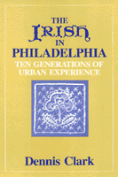

<body bgcolor="#FFFFFF" text="#000000" link="#0000FF" vlink="#CC0000" alink="#CC0000"><center><hr width="350" size="1" align="center" noshade><hr width="350" size="1" align="center" noshade><p><a href="https://cdcshoppingcart.uchicago.edu/Cart/ChicagoBook.aspx?ISBN=9780877220572&&PRESS=temple" target="_top">Buy this book!</a> | <a href="https://cdcshoppingcart.uchicago.edu/Cart/Cart.aspx?PRESS=temple" target="_top">View Cart</a> | <a href="https://cdcshoppingcart.uchicago.edu/Cart/Cart.aspx?PRESS=temple" target="_top">Check Out</a></p><p></p></center><!--none//--><h1>The Irish in Philadelphia</h1>
<H2>Ten Generations of Urban Experience</H2>
<h3>Dennis Clark</h3>
<P>cloth 0-87722-057-3 $29.95, <FONT COLOR=#990033>Out of Print</FONT>
<br>paper 0-87722-227-4 $29.95, Jan 82, <FONT COLOR=#990033>Available</FONT>
<BR> 264 pp
</P><BLOCKQUOTE><I>"...a serious, solid, widely and deeply researched study that reveals a number of significant and interesting insights into Irish immigrant history in America."</I>
<br>&#151<b><I>Commonwealth</I></b><I></I></BLOCKQUOTE>
<h2>Excerpt</h2><P>Excerpt available at <a href="http://www.temple.edu/tempress">www.temple.edu/tempress</a></p>
<BR>&nbsp;<h2>Reviews</h2>
<p><I>"A fine book about the Irish in Philadelphia that is a combination of social history and a study of ten generations of a transplanted minority struggling initially for survival, then for advancement, affluence, recognition and identity against formidable odds."</i>
<br>&#151<b><i>Pennsylvania Magazine of History and Biography</i></b>
<p><i>"A fund of good stories and some interesting conclusions on the extraordinarily adept transition managed by an essentially rural people into a rough and bustling urban environment in the mid-nineteenth century."</i>
<br>&#151<b><i>Philadelphia Inquirer</i></b>
<p><i>"A valuable contribution that will prove interesting not only to historians but also to sociologists and students of urban problems."</i>
<br>&#151<b>Oscar Handlin</b>
<BR>&nbsp;<h2>Contents</h2><P>
<p>Foreword
<br>Preface
<br>1. A Tradition Grows
<br>2. The Famine Generation
<br>3. City Shelter
<br>4. Working to Live
<br>5. Church and School
<br>6. Clans and Causes
<br>7. Hibernia Philadelphia
<br>8. The Tradition Persists
<br>9. The Urban Irishman
<br>Notes
<br>Note on Sources
<br>Index
</P><BR>&nbsp;<H2>About the Author(s)</H2>
<P><b>Dennis Clark</b> is a Philadelphian who has written a number of books on urban problems, race relations, and immigrant history. <i>The Irish of Philadelphia</i> is the first of several volumes produced by the author tracing the history of Philadelphia's 200-year-old Irish community.</P>
<BR><H2>Subject Categories</H2>
<p><A HREF="/tempress/philly.html" TARGET="_top">Philadelphia Region</a>
<BR><A HREF="/tempress/race.html" TARGET="_top">Race and Ethnicity</a>
</p>
<p align="center"><a href="https://cdcshoppingcart.uchicago.edu/Cart/ChicagoBook.aspx?ISBN=9780877220572&&PRESS=temple" target="_top">Buy this book!</a> | <a href="https://cdcshoppingcart.uchicago.edu/Cart/Cart.aspx?PRESS=temple" target="_top">View Cart</a> | <a href="https://cdcshoppingcart.uchicago.edu/Cart/Cart.aspx?PRESS=temple" target="_top">Check Out</a></p><p><font face="Arial" size="1"><a href="copyright.html" onMouseOver="window.status='Web Copyright Policy';return true;" onMouseOut="window.status=''" title="Web Copyright Policy">&copy;</a> 2015 <a href="http://www.temple.edu" target="new" onMouseOver="window.status='Link to Temple University home page';return true;" onMouseOut="window.status=''" title="Link to Temple University home page">Temple University</a>. All Rights Reserved. http://www.temple.edu/tempress/titles/62_reg.html</font></p>